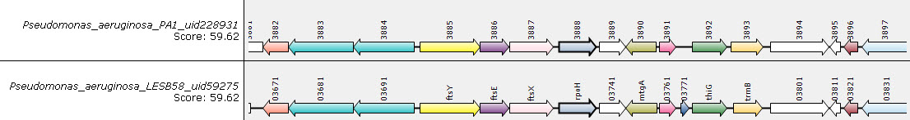

Genome Comparisons and Synteny
- SyntTax - is a web server linking synteny to prokaryotic taxonomy. SyntTax incorporates a full hierarchical taxonomic tree allowing intuitive access to all completely sequenced prokaryotes (Archaea and Bacteria). Single or multiple organisms can be chosen on the basis of their lineage by selecting the corresponding rank nodes in the tree. This is my favourite among the synteny programs
(Reference: Oberto J. 2013. BMC Bioinformatics. 14:4).
The results below were generated using the heat-shock sigma factor (RpoH) from Salmonella Typhimurium against the Pseudomonadales. - Cinteny Server for Synteny Identification and Analysis of Genome Rearrangement (A. U. Sinha & J. Meller, University of Cincinnati, USA) - this server can be used for finding regions syntenic across multiple genomes and measuring the extent of genome rearrangement using reversal distance as a measure. You may create a project and upload your own data or work with pre-loaded prokaryote or eukaryote data.
- SimpleSynteny - provides a pipeline for evaluating the synteny of a preselected set of gene targets across multiple organismal genomes. An emphasis has been placed on ease-of-use, and users are only required to submit FASTA files for their genomes and genes of interest. SimpleSynteny then guides the user through an iterative process of exploring and customizing genomes individually before combining them into a final high-resolution figure.
(Reference: Veltri D et al. 2016. Nucleic Acids Res. 44(Web Server issue): W41–W45). - Synteny Portal - eukaryotic genome users can easily (i) construct synteny blocks among multiple species by using prebuilt alignments in the UCSC genome browser database, (ii) visualize and download syntenic relationships as high-quality images, (iii) browse synteny blocks with genetic information and (iv) download the details of synteny blocks to be used as input for downstream synteny-based analyses, all in an intuitive and easy-to-use web-based interface.
(Reference: Lee J et al. 2016. Nucleic Acids Res 44(W1): W35–W40). - Kablammo helps you create interactive visualizations of BLAST results from your web browser. Find your most interesting alignments, list detailed parametersfor each, and export a publication-ready vector image. Incredibly easy to use - here are the results for a BLASTN comparison to Escherichia phages T1 (query) and ADB-2.
(Reference: Wintersinger JA et al. Bioinformatics 31:1305-1306). - M1CR0B1AL1Z3R - is a 'one-stop shop' for conducting microbial genomics data analyses via a simple graphical user interface. Some of the features implemented in M1CR0B1AL1Z3R are: (i) extracting putative open reading frames and comparative genomics analysis of gene content; (ii) extracting orthologous sets and analyzing their size distribution; (iii) analyzing gene presence-absence patterns; (iv) reconstructing a phylogenetic tree based on the extracted orthologous set; (v) inferring GC-content variation among lineages. M1CR0B1AL1Z3R facilitates the mining and analysis of dozens of bacterial genomes using advanced techniques.
(Reference: Avram O et al. (2019) Nucleic Acids Res. 47(W1): W88-W92). - GeneOrder 4.0 (D. Seto, Bioinformatics & Computational Biology, George Mason Univ., U.S.A.) is designed to can be used to compare the gene order between two bacterial genomes
(Reference: Mahadevan P. & Seto D. 2010. BMC Research Notes 3:41). - CoreGenes (D. Seto & P. Mahadevan, Bioinformatics & Computational Biology, George Mason Univ., U.S.A) - tallies the total number of genes in common between the two genomes being compared; displays the percent value of genes in common with a specific genome; determines the unique genes contained in a pair of proteomes. CoreGenes 3.5 is the batch CoreGenes server. I have extensively used this set of resources in the classification of bacterial viruses.
- If you have a a gbk file for a phage which has not yet been deposited in GenBank you can use these instructions to convert your data into CoreGenes format for use here.
- CoreGenes 5.0: A Webserver For The Determination Of Core Genes From Sets Of Viral And Bacterial Genomes (Padmanabhan Mahadevan, University of Tampa, FL, USA) - allows up to 20 GenBank accession numbers to be manually entered or using the "File Upload" feature >20 accession numbers can be assessed. The program will provide Bidirectional Best Hit, OrthoMCL or COGTriangle results. This program has proved very useful in recent studies on the classification of bacterial viruses.
(Reference: Davis, P. et al. Viruses. 2022. 14(11): 2534). - CAGECAT - the online CompArative GEne Cluster Analysis Toolbox consists of claster and clinker which generate publication-quality gene cluster comparison figures.
(Reference: Gilchrist CLM & Chooi Y-H. 2021. Bioinformatics 37(16): 2473-2475).
On this website it is possible to choose protein comparison (clinker) or DNA comparison (cblaster). Below is a clinker diagram showing relatedness between a pair of phage proteomes. Clinker is also available here. - EDGAR (Efficient Database framework for comparative Genome Analyses using BLAST score Ratios) - EDGAR is designed to automatically perform genome comparisons in a high throughput approach and can be used for core genome, pan genome and singleton analysis, and Venn diagram construction.
(Reference: Blom J. et al. 2009. BMC Bioinformatics 10: 154). - OrthoVenn3 - enables users to efficiently identify and annotate orthologous clusters and infer phylogenetic relationships across a range of species. The latest upgrade of OrthoVenn includes several important new features, including enhanced orthologous cluster identification accuracy, improved visualization capabilities for numerous sets of data, and wrapped phylogenetic analysis.
(Reference: Sun J. et al. 2023. Nucl. Acids Res. 51(W1): W397-W403).

.jpg)
.png)
Updated: December, 2025